月曜日の便り。2026年のノーベル物理学賞は、南極の氷を検出器に変えたIceCubeへの貢献とフランシス・ハルツェンに贈られた。畏敬の章ではこの発見に加え、10月20日に迫るJAXAのMMX打ち上げの正確な時刻、95年前に予言された「ベーテ弦」の初観測、肥満治療薬retatrutideの第3相、嫦娥6号が持ち帰った月のガラスの純鉄を届ける。基盤の章ではケニアのエボラ接触者が122人に倍増しても二次感染はゼロという報告と、DRC北キブ州への拡大、ロシア・イルクーツクの肺ペスト疑い、日本のインフルエンザ急増を。自由の章ではNeuralinkのカーソル操作新記録、中国の侵襲型BCI商用化の広がり、非侵襲キャップSabiへの大型投資を。命の章ではアピテグロマブの欧州申請撤回と日本の年内申請、生後21日以内の早期治療データ、インドのSMA基金訴訟の進展を。美の章ではAnthropicのClaude保護ポリシーと、故人再現AIへの研究者自身の警鐘を取り上げる。
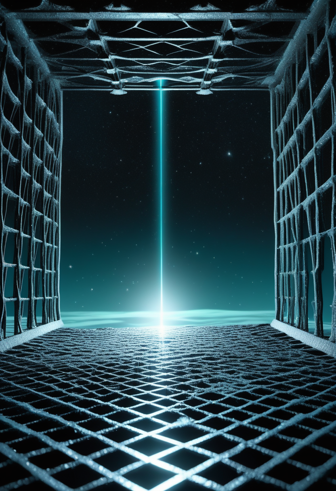
2026年のノーベル物理学賞は、南極の氷そのものを検出器に変えるIceCubeニュートリノ観測所への決定的な貢献と、宇宙起源の高エネルギーニュートリノの発見に対し、フランシス・ハルツェンに授与された。可視光では届かない宇宙の姿を、氷の奥深くに埋めた検出器アレイが十数年がけで捉えた成果が、最高の形で報われた。NASAは10月11日の天文写真でこの発見を「宇宙ニュートリノの氷中釣り」と呼んでいる。詳細は畏敬の章で。
米国で承認されたアピテグロマブ(商品名ISEMBYLD)だが、欧州連合(EU)ではScholar Rockが8月13日付でEMAへの販売承認申請を撤回していたことが、EMAの撤回通知で確認できた。原因は委託先工場(米Catalent Indiana、現ノボ ノルディスク傘下)の4月査察でGMP不適合(Official Action Indicated)が指摘されたため。同社は当該施設を申請から外し、別の充填・仕上げ施設で再提出する方針を示している。英国はMHRAへの申請を現時点で行わないとし、日本はPMDAと協議のうえ年内のJNDA提出を計画中(提出は未完了)。承認済みは依然米国のみで、地域差は広がっている。
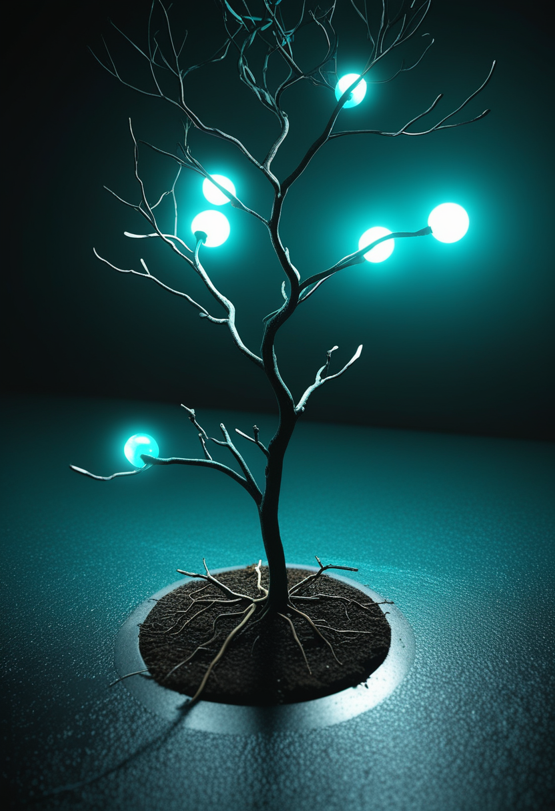
Cure SMAのデータを分析した研究は、2〜9歳のSMA児139人の保護者からの回答を基に、生後21日以内に治療を始めた群は合併症が少なく、運動発達の目標に到達する割合も高かったと報告した。観察研究のため因果関係の確定はできないが、新生児スクリーニングで早期に見つけ早期に治療を始める意義を後押しする結果になる。
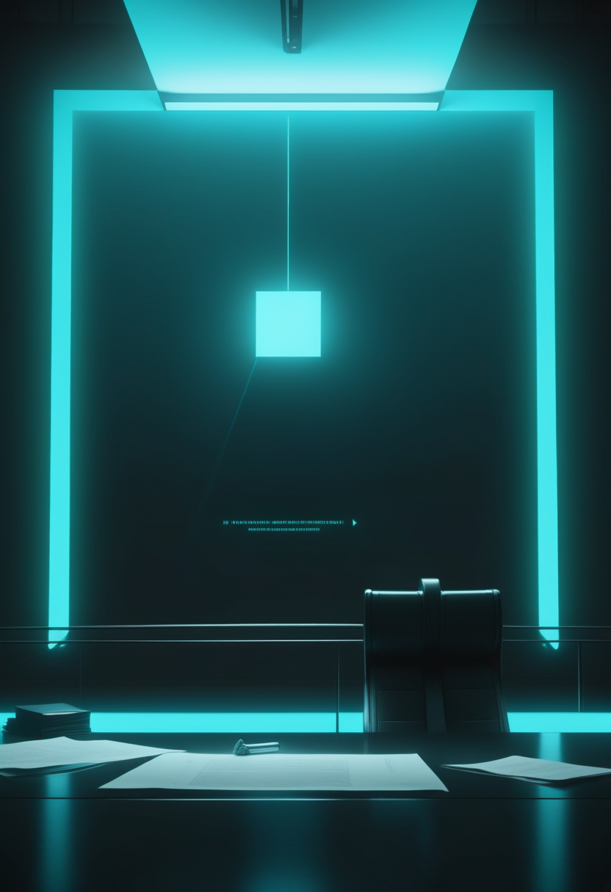
インド最高裁は10月8日、高額かつ長期に及ぶSMA治療を支える恒久基金の設置案を法廷助言人に求め、企業の社会貢献(CSR)資金や政府補助を財源の例として挙げた。提出期限は4週間以内とし、Cure SMA Foundationの訴訟参加も認めた。基金創設の要請が、具体的な期限と当事者参加の段階に進んだ。
承認・申請・訴訟 ― SMA治療を届ける制度は、薬そのものより複雑な地図を描いている。生後21日という早さの価値は、どの制度の上でも変わらない。
Neuralinkは10月1日の技術ノートで、治験参加者から集めた5万時間超のラベルなし神経データを使って解読器を事前学習させ、参加者の一人(P15)がカーソル操作で11.32ビット/秒(従来記録10.39)を記録したと発表した。一部参加者では週ごとの再調整に要する時間が約55分から約10分に短縮したという。いずれも企業発表の段階で、独立検証や査読はまだ済んでいない。
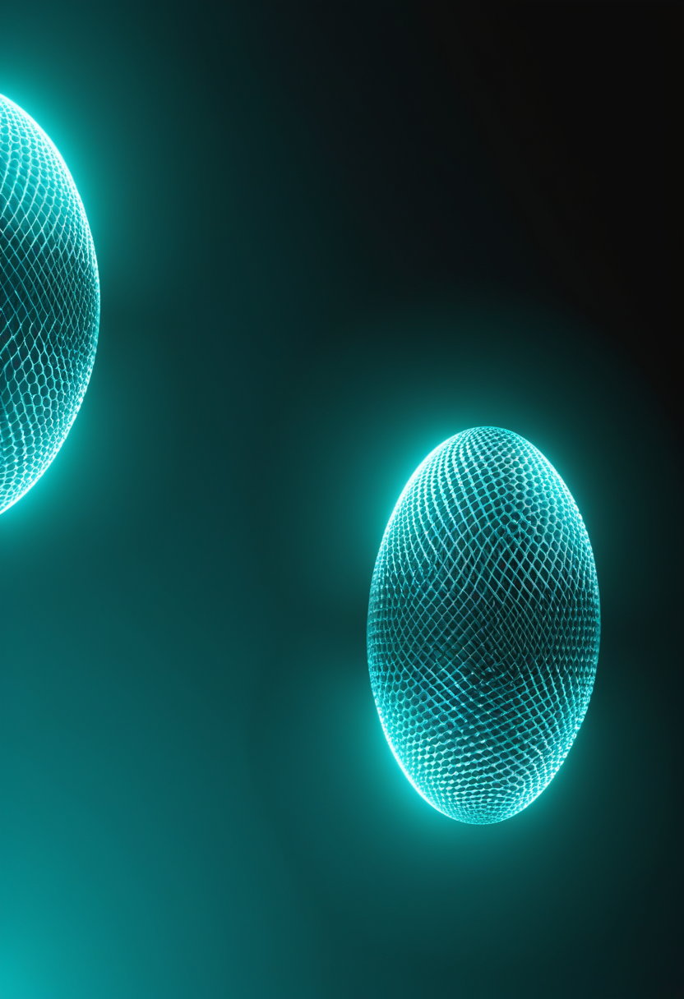
中国の規制当局が3月に製造販売承認を与えたNeuracleの侵襲型BCI「NEO」(頸椎損傷による重度麻痺が対象)は、7月に上海・華山医院で初の商用埋込みを実施した。主要試験は36人を対象に行われ、ClinicalTrials.govにNCT06990412として登録されている。並行して北京天壇医院が主導する多施設治験では、128チャンネルの完全埋込み型・充電可能な無線装置の評価が5月から進んでおり、商用化した機種の次の世代がすでに臨床評価に入っている。
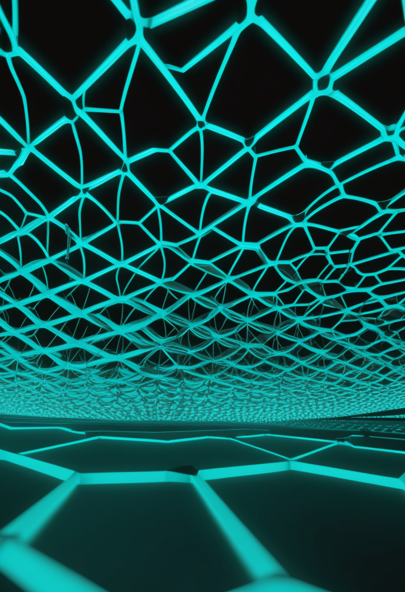
パロアルトのSabiは10月9日、Khosla Ventures主導で5,000万ドルのシード資金を調達したと発表した(評価額6億ドル)。高密度EEGセンサーを帽子に組み込み、考えたことをAIへの指示文に変換する構想で、初期目標は毎分約30語の入力。解読精度などの測定データは未公表で、性能は現時点では企業の主張にとどまる。
10月7日、障害のある人のためのAI視線追跡支援システムをYOLOv3で構成した論文が査読誌Electricaに公開された。装置側ではTobiiが10月22日に2026年第3四半期報告とCEOファディ・ファラオンによるウェブキャストを予定している。同社は9月にローカルWebカメラでの研究用視線計測を発売しており、支援機器分野は分離先のTobii Dynavoxが担う。
埋め込み型は大量データで学習した解読器の記録更新、中国は商用承認の次の世代へ、非侵襲型は資金で勢いをつける。どの道も、独立した検証がまだ追いついていない。
ケニア保健省のドゥアレ保健長官は10月11日、国内初のエボラ病(ブンディブギョ型)輸入例をめぐる接触者を122人まで特定・確認し、うち108人(約88.5%)を隔離して毎日観察していると説明した。発症者はまだ出ていない。289件の通報から採取した293検体を5つの指定ラボ(うち2つはルワカハ・ブシアの国境に設けた移動式)で検査し、陽性は最初の1例のみ。確定から5日が過ぎても新規例はなく、残る14人の所在確認と21日間の観察期間を終えられるかが今後の節目になる。
WHOの10月8日付発生情報では、DRCのブンディブギョ型エボラは確定8,728例・死亡4,205人(10月6日時点、致命率48.2%)、7州64保健区域に及ぶ。震源のイトゥリ州が全体の74.3%を占める一方、Al Jazeera(10月11日)は北キブ州アリンボンゴ保健区域で初の症例が出たと伝えた。週あたり新規例は475件から487件とほぼ横ばいで、減速している地域と拡大している地域が併存する。隣国ウガンダ(終息済み)・フランス(輸入1例)に活動中の症例はなく、ケニアは4カ国目の報告国となった。
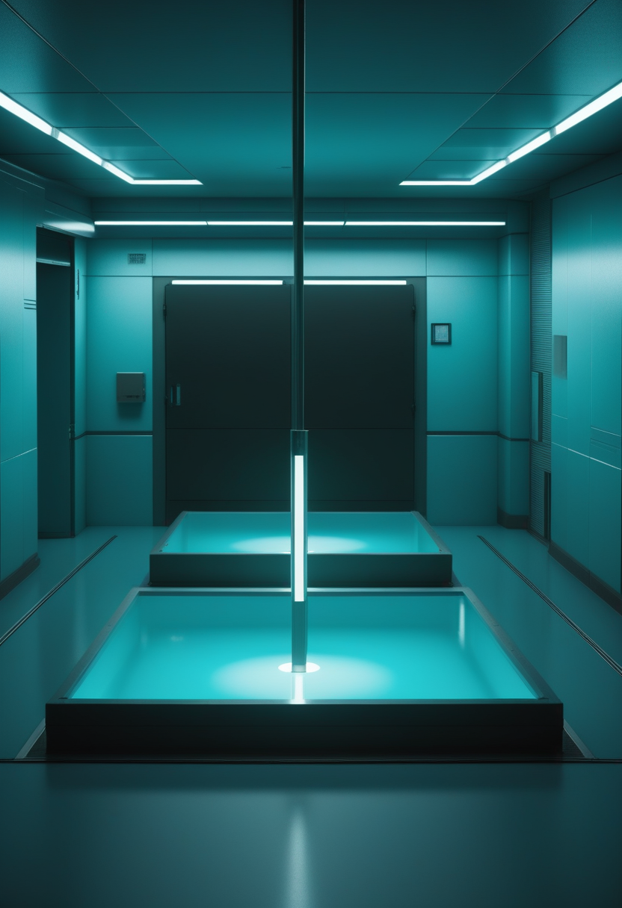
WHOは10月10日付の発生情報で、イルクーツクの抗ペスト研究所に勤務する28歳の検査技師が原因不明の肺炎で死亡した件を公表した。肺ペストが疑われているが死因は未確定。ロシアの監督機関ロスポトレブナゾルは、彼女が扱っていた病原体に起因する証拠は検出されなかったとし、接触者の観察は10月8日に終了、危険な病原体は誰からも検出されなかったと説明している。第2例の報道をロシア側は「虚偽の情報」と否定し、WHOは国際保健規則に基づく正式な回答と検査結果の提出を求めた。WHOは非公式情報に基づき一般住民へのリスクは低いとみている。
札幌市が10月9日に更新した集計では、全国の定点当たり報告数は第38週8.48、第39週7.17、第40週(9月28日〜10月4日)11.35。いったん下がった後に大きく上がった。広島県は第40週の県内定点7.27を受けて注意報を発令した(いずれも速報値、確定値は厚労省・JIHSの週報で要確認)。異例に早い流行入りは、10月に入っても勢いを落としていない。
ケニアは追跡の網を広げても二次感染ゼロを保ち、DRCは数字の横ばいの裏で地図が動く。ロシアの一件は未確定のまま国際保健規則の手続きに入った。日本の季節はずれたまま駆け上がっている。
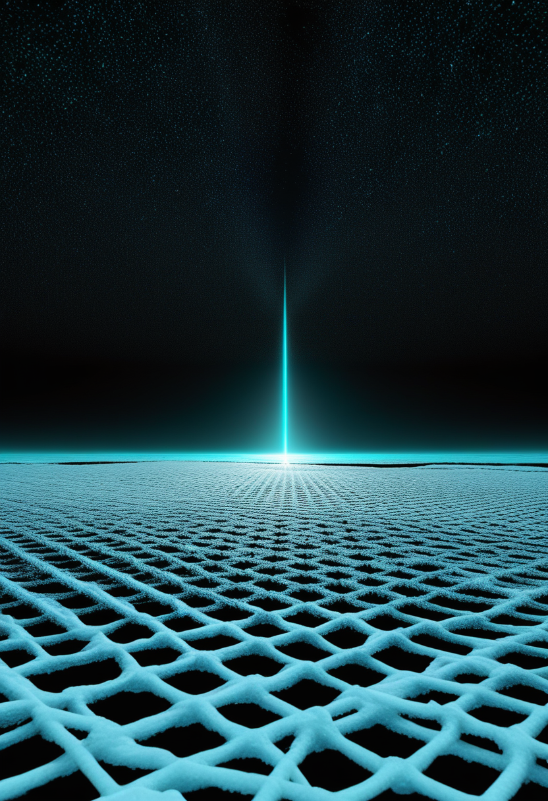
2026年のノーベル物理学賞は、南極の氷そのものを検出器に変えるIceCubeニュートリノ観測所への決定的な貢献と、宇宙起源の高エネルギーニュートリノの発見に対し、フランシス・ハルツェンに授与された。NASAは10月11日の天文写真で、この成果を「宇宙ニュートリノの氷中釣り」として取り上げている。目に見える光だけでは届かない宇宙の姿を、氷に埋めた検出器が十数年がけで捉えた。
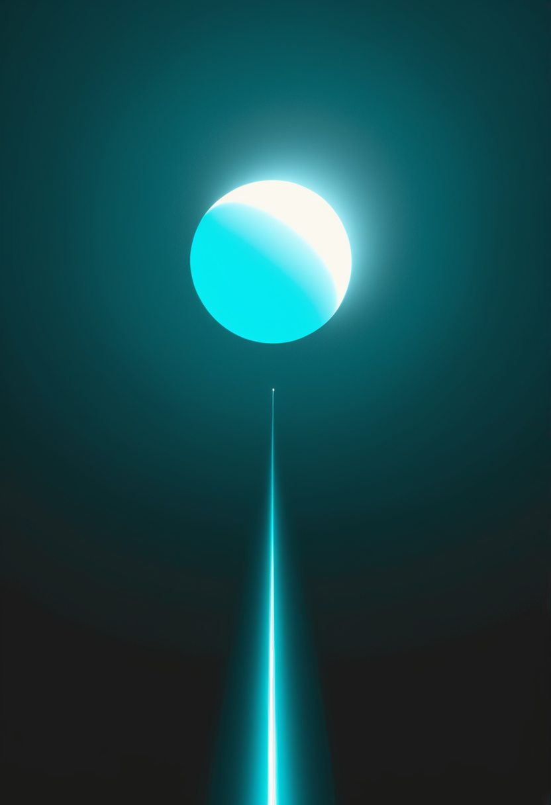
JAXAは火星の衛星フォボスから試料を持ち帰るMMXを、10月20日午前4時41分03秒(日本時間)にH3ロケット10号機(推力最大の「24形態」)で種子島宇宙センターから打ち上げる計画を示した。予備期間は10月21日〜11月7日。打ち上げから約1年後に火星付近に到着し、フォボスの砂を採取して2031年度に地球へ持ち帰る。約26カ月ごとにしか来ない火星への打ち上げ機会に合わせた、一度きりの窓になる。
インスブルック大のチームはアムステルダム大・ミュンヘン工科大の理論グループと共同で、1次元に閉じ込めた極低温セシウム原子間の相互作用を反発から引力へ切り替え、ハンス・ベーテが1931年に予言した多粒子の束縛状態「ベーテ弦」を作り出して観測した。結合エネルギーの測定から、6個を超える粒子の束縛状態が存在することを確認したとしている(Nature Communications、9月下旬)。理論から95年を経て、その姿が実験室の中に現れた。
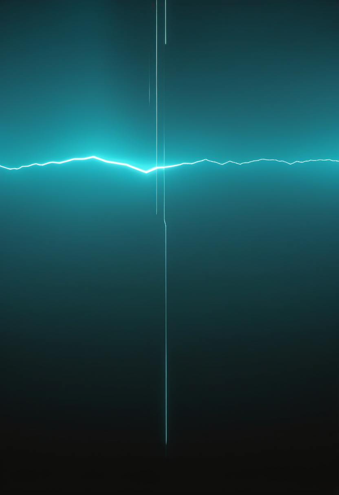
The Lancet10月10日号(第408巻第10563号)に、肥満と2型糖尿病を併せ持つ成人を対象としたretatrutideの第3相TRIUMPH-2が掲載された。Eli Lillyが7月23日に公表した結果では、80週時点の平均体重減少は4mg投与で約12.7%、9mgで約19.1%、12mgで約20.8%、HbA1cの低下は最大で平均1.6ポイント。有害事象は消化器系が中心で、投与中止率は3.8%から11.6%(プラセボ4.9%)だった(推定方法の違いで数値は出典間で異なるため、Lillyの公表値を採った)。
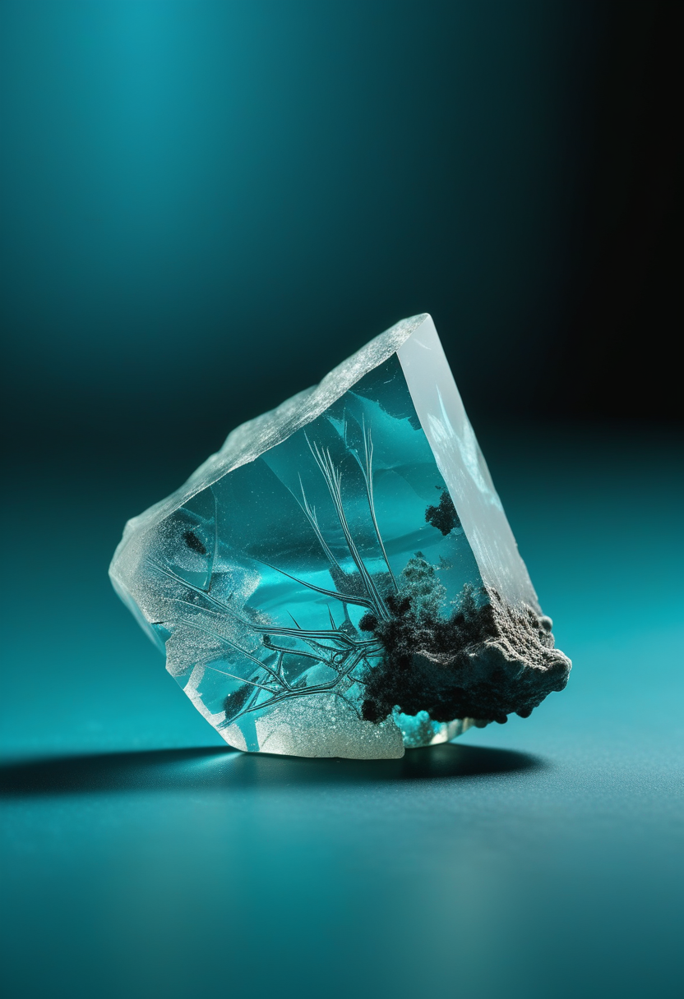
中国科学院合肥物質科学研究院は10月9日、嫦娥6号が月の裏側から持ち帰った試料のガラス片に、月面の温度では通常存在しないはずの純鉄の相(γ鉄)が含まれていたと報告した。研究を率いた李龍氏は、この発見が月の古い磁場の歴史を理解する手がかりになりうるとしている。鉄の相が「磁気の化石」として読める可能性があり、一次試料の分析が月磁場論に新しい材料を加えた。
氷の中の検出器がノーベル賞を取り、95年前の予言が実験室に現れ、月の砂のガラス片が磁場の化石として読まれる。今月20日のMMX打ち上げが、次に見える距離を伸ばす番になる。
Anthropicは利用ポリシーを改定し、Claudeへの持続的で目的のない虐待を禁止した(11月12日施行)。普通の不満の表明や反論、暗い創作、研究目的のテストは対象外で、主な執行手段はClaude自身が会話を終了できる機能。AIの道徳的地位は不確実だとしたうえでの予防的措置で、Claudeが苦しむと認めたものではないと説明している。
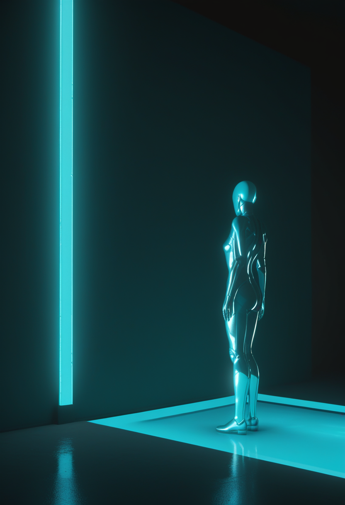
MITのシェリー・タークル氏はWashington Postへの寄稿(10月4日)で、故人を再現するAIアバターを自ら試し、悲嘆の過程に使うのは危ういと論じた。故人の再現に誰が同意できるのかなど、サービス側の情報開示の乏しさも議論になっている。前号で取り上げた「同意」と「依存させない設計」という論点に、実際に使ってみた研究者自身の声が加わった。
ルールは人からAIへの振る舞いを縛り、警鐘はAIが人の悲しみに触れる場面に向かう。どちらも、技術の速さに制度と言葉が追いつこうとしている。
月曜日の便り。2026年のノーベル物理学賞は、南極の氷を検出器に変えたIceCubeへの貢献でフランシス・ハルツェンに贈られた。畏敬の章ではこの発見に加え、JAXA MMXの打ち上げ時刻確定、95年前に予言された「ベーテ弦」の初観測、retatrutideの第3相、嫦娥6号が持ち帰った月のガラスの純鉄を届けた。基盤の章では、ケニアのエボラ接触者が122人に倍増しても二次感染がゼロのままという報告と、DRC北キブ州への拡大、ロシアの肺ペスト疑い、日本のインフルエンザ急増を伝えた。自由の章では、Neuralinkのカーソル操作新記録と中国の侵襲型BCI商用化の広がり、非侵襲キャップSabiへの大型投資を。命の章では、アピテグロマブの欧州申請撤回と日本の年内申請、生後21日以内の早期治療データ、インドのSMA基金訴訟の進展を。美の章では、Anthropicの新しい保護ポリシーと、故人再現AIへの研究者自身の警鐘を届けた。
では、また明日の朝に。 — JaH